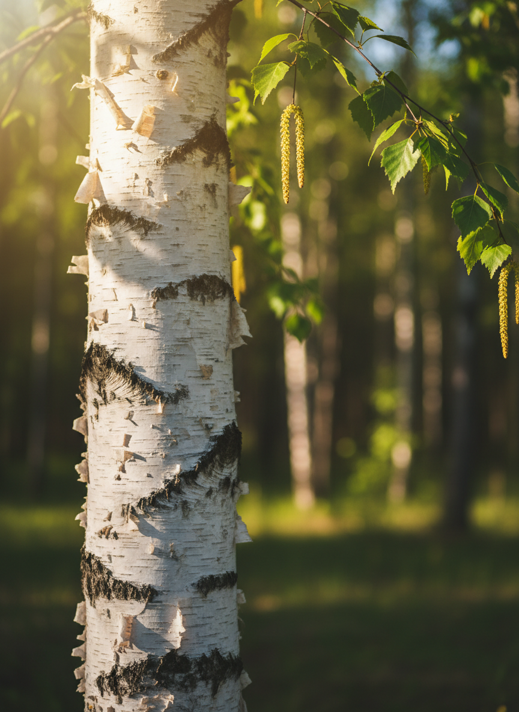

Birkenpfade
Natur – Verbindung – Sein
Wie ich zu dem Namen BIRKENPFADE kam.
BIRKEN
Die Birke, begleitet mich schon mein Leben lang, da sie ein Teil meines Nachnamens ist und sie egal wo ich wohnte, immer in unmittelbarer Nähe zu finden war.
Ich schätze die symbolische Bedeutung des Baumes. In der nordischen Mythologie wird die Birke mit der Rune Berkano (ᛒ) assoziiert, die für Neubeginn, Heilung und weibliche Energie steht.
Die unterschiedlichen Teile der Birke können die Gesundheit unterstützen. Beispielsweise wirkt sie entgiftend, entwässernd, blutreinigend, wundheilend, belebend und stärkend.

PFADE
Der Pfad beschreibt einen schmalen Weg, der manchmal etwas versteckt ist und gefunden werden darf. Breite und festgefahrene Wege werden verlassen.
Mit BIRKENPFADE möchte ich dich einladen, die festgefahrenen "Alltags-Wege" zu verlassen und mir auf den Pfaden mitten durch die Natur zu folgen.
BIRKENPFADE
B ewusstSein
I nspiration
R eflexion
K reativität
E rholung
N aturerfahrung
P flanzenwissen
F antasie
A uszeit
D ankbarkeit
E rdung
„Ich und meine Angebote bei Birkenpfade stehen für erholsame und freudvolle Naturverbindung, inspirierende Impulse sowie kompetente Begleitung.“